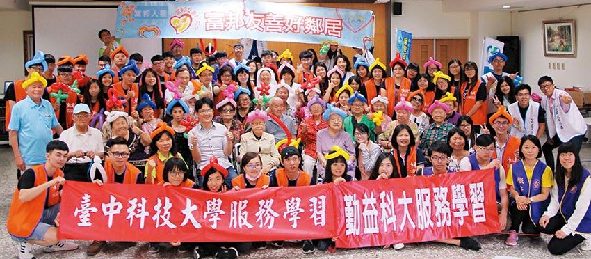

富邦人壽以「失智預防」、「友善高齡」、「健康促進」三大守護網回應高齡社會的銀色浪潮，近3萬名同仁完成失智守護訓練課程並將全省400多個通訊處建置成失智守護據點，強化台灣高齡社會防護網絡。2017年更攜手老人福利推動聯盟，把失智關懷議題帶入大學校園，招募逾1,000名校園長照大使志工，舉辦高齡關懷桌遊及守護天使課程，喚起年輕族群對高齡社會及健康生活的重視與關心。
富邦人壽總經理陳俊伴說：「台灣已進入高齡社會，富邦人壽持續落實對台灣社會關懷承諾，結合地區服務據點，深化在地經營。我們不僅以身作則，更把高齡關懷的種籽往下扎根。我們極力整合企業、教育與社區資源，共同推展銀光樂活、健康促進，期望發揮公益綜效最大化，打造社會共好典範。」
富邦人壽看見高齡關懷向下札根的急迫性，加上堅持深耕在地的社會價值，與台中科技大學保險金融管理系專業課程服務與學習之設計精神不謀而合，2017年起牽起雙方合作的美好緣份，結合保險教育知識推動、區域合作及服務體驗學習，共同培育產業人才。
在長達八個月的合作中，逾百名富邦人壽在地同仁與師生完成32場金融教育及在地關懷活動，前往中和、田心社區等地舉辦多場桌遊活動。桌遊可活絡大腦、訓練反應，延緩老化，學生們學習與長者互動，及利用簡單小遊戲養生保健，拉近長者與年輕人距離。
台中科大保金系簡淑華教授提到：「保險業是高度人際關懷的專業產業，協助學生及早熟悉生命週期，不但有助於學習，更能激發他們對所學知識及技能的價值認同。」因為「年老」對於年輕稚嫩的學生而言，是個難以想像、體會的概念，這也提高了照護與關懷的挑戰性。
在某次活動中，同學眼見一名雙手截肢的長者試圖吃紅豆湯，不便、艱難的神情讓他看了難受很是心疼，主動上前協助餵食，事後在班上分享時仍忍不住拭淚。簡教授感慨地表示，透過這樣真實的內涵學習，學生們不僅深受震撼與啟發，更紛紛反應會更主動關懷家中老人家。中科大保金系的劉育含體會到，「其實陪伴是最重要的，」她與同學們絞盡腦汁籌畫各式各樣活動，期待能與長者有更多互動時光，並實際觀察到長者因年老或生病的健康狀況；也深刻感受到自己所學確實能幫助他人，以及提早規劃財務的重要性。

2018年富邦人壽擴大進行大台中地區高齡長者關懷與社區鄰里服務，與亞洲大學、中洲科大、勤益科大與僑光科大合作。
其中一場活動，富邦人壽中笙通訊處、台中科大與勤益科大共同前往社區日照型機構聖心聖愛山莊進行高齡長關懷與陪伴，與長輩們玩桌遊、台語猜謎，富邦人壽同仁以二胡獻藝，演奏耳熟能詳的經典台語歌曲，讓現場平均年齡83歲的長輩們陶醉不已。富邦人壽中笙通訊處林仁遠處經理指出，走入社區服務，不但展現保險業在地即時的「愛」與「關懷」，與長者互動就會有深刻感受，同仁們對長照議題更有連結。
對林仁遠與通訊處同仁來說，這樣的活動並非第一次，大無疆計畫鼓勵青年返鄉服務鄰里，為經營在地深耕客戶，富邦人壽更於全台推動「小邦服務計畫」，由各據點同仁提案執行在地服務，由總公司提供公益執行資源。透過在地同仁志願服務，結合公益團體力量發揮綜效，為在地社區盡一份心力。林仁遠說，小邦計畫不只是捐錢給受助單位，更是富邦人壽透過業務同仁表現對社區的關懷、體驗社會責任及工作價值。
不論是小邦計畫或其他在地通訊處同仁自發性的志工服務活動，背後令人津津樂道的感動小故事多到無法想像，林仁遠說台灣最美的風景就是人。這次與台中科大保金系及其他學校的合作服務活動中，也有許多在地企業的加入，共同見證了「做中學，學中悟」的感動美好。簡淑華憶起在一次服務活動中，參與企業之一的久味麻糬張桂香大姐在現場直接將麻糬做成一口大小，避免長者噎食，讓學生體會銀髮照護的細心需求；考慮咖啡因與糖份對許多患有糖尿病與高血壓或服用藥物的長者來說並不健康，茶活Tlives的莊誌銘與莊誌倫兄弟研發由在地水果低溫烘製的果乾冷泡茶，兼顧食育與飲食文化傳承雙重任務。
從小由爺爺奶奶扶養長大的莊家兄弟，很高興能以一己專長為長者貢獻心力，在活動中他們體會到「企業社會責任不是只有捐錢」，小企業也可以即時付出，久味麻糬張桂香大姐堅持親赴活動，對她來說，付出的成就感遠勝於一切。因為富邦人壽的公益信念與行動，連結學校、在地企業與社區，為高齡照護織起滴水不漏的守護網。
因為深信保險公司本身是社會公益的執行者，也以社區好鄰居的國民品牌自許，富邦人壽堅持企業社會責任應該著眼於平衡企業成長、社會與環境關懷的ESG原則，著手與學校合作協助擴展USR，深化學習效益，將公益感動力深植學生心中，在推動更多單位夥伴與學校學生志工投入大學社會責任實踐之際，也栽植出一片充滿希望的未來新景象，社會共好得以成長茁壯。